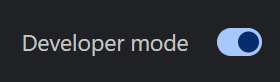
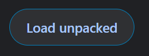

Wybierz najwygodniejszą metodę instalacji
Oba rozwiązania sprawdzają się świetnie — wybierz pasujące do twojej pracy.
Najłatwiejsza instalacja w Chrome, Edge, Brave i innych przeglądarkach opartych na Chromium.
Aktualizacje dostępne co kilka tygodni po weryfikacji.
Pobierz z Chrome Web StoreNajbardziej aktualna wersja dla Chrome, Edge, Brave i innych przeglądarek Chromium.
Wymaga trybu dewelopera, ale zapewnia natychmiastowe aktualizacje.
Zobacz instrukcje instalacji Pobierz najnowszą wersjęPodpisane rozszerzenie Firefoksa do bezpośredniej instalacji.
Niektóre funkcje, takie jak modele TTS i przechwytywanie karty, nie są dostępne w Firefoksie.
Zobacz instrukcje instalacji Pobierz XPIOsobna aplikacja komputerowa dla Windows 10/11 (x64).
Nie wymaga rozszerzenia przeglądarki. Aktualizuje się automatycznie.
Pobierz dla WindowsOsobna aplikacja komputerowa dla macOS.
Nie wymaga rozszerzenia przeglądarki. Aktualizuje się automatycznie.
Pobierz dla macOSAppImage dla dystrybucji Linuksa.
Ograniczone wsparcie, ale powinno działać w większości nowoczesnych dystrybucji.
Pobierz AppImageSkorzystaj z dokładnego tekstu ostrzeżenia na ekranie, aby znaleźć bezpieczne kroki dotyczące SmartScreen, Defendera, Smart App Control, kontroli dewelopera w macOS, ostrzeżeń dotyczących notaryzacji lub błędów AppImage w Linuksie.
Otwórz poradnik bezpieczeństwa aplikacji komputerowejSSApp 0.4.7 i nowsze mają wbudowany tryb uruchamiania MCP. Nie potrzeba kopii kodu źródłowego, instalacji Node ani osobnego adaptera. Po instalacji włącz Plik > Lokalne AI / Automatyzacja (File > Local AI / Automation) i skopiuj wygenerowaną konfigurację MCP.
Zobacz konfigurację lokalnego AI i MCPPołącz czat YouTube, Twitcha lub Kicka bez instalowania rozszerzenia ani aplikacji komputerowej. Uruchom Lite w karcie przeglądarki lub własnym doku OBS i użyj linku nakładki w OBS.
Zwykły link nakładki wymaga, by Lite działał w karcie lub doku. Opcje konfiguracji wyłącznie w OBS znajdziesz tutaj: Poradnik Lite w OBS.
Przejdź do Social Stream Ninja LiteSocial Stream Ninja ma otwarty kod na licencji GPLv3.0. Możesz przeglądać projekt, utworzyć fork lub współtworzyć go na GitHubie.
Przejdź na stronę rozszerzeń przeglądarki:
chrome://extensions/ dla Chromeedge://extensions/ dla Edgebrave://extensions/ dla Brave
Włącz „Tryb dewelopera” w prawym górnym rogu strony rozszerzeń.

Kliknij „Załaduj rozpakowane” (Load unpacked) i wybierz folder, do którego rozpakowano pliki.

Gotowe! Otwórz obsługiwaną platformę czatu i kliknij ikonę rozszerzenia Social Stream Ninja, aby je włączyć.
Zobacz poradnik użytkowaniaOtwórz Firefoksa i zainstaluj rozszerzenie:
about:addons w FirefoksieWersja dla Firefoksa ma pewne ograniczenia względem Chrome:
Niektóre dystrybucje mogą zgłaszać błędy piaskownicy podczas uruchamiania naszego AppImage. Zobacz poradnik rozwiązywania problemów z piaskownicą w razie błędów konfiguracji piaskownicy SUID.
Pobierz plik AppImage na komputer.
Kliknij plik prawym przyciskiem, wybierz Właściwości, następnie Uprawnienia i zaznacz „Zezwalaj na wykonywanie pliku jako programu”. Możesz też użyć terminala: chmod +x SocialStreamNinja.AppImage
Kliknij dwukrotnie AppImage, aby uruchomić Social Stream Ninja, lub uruchom go z terminala: ./SocialStreamNinja.AppImage
Nasza społeczność na Discordzie chętnie pomoże ci zacząć
Pobierz Social Stream Ninja i odmień swoje kontakty z widzami na wielu platformach.